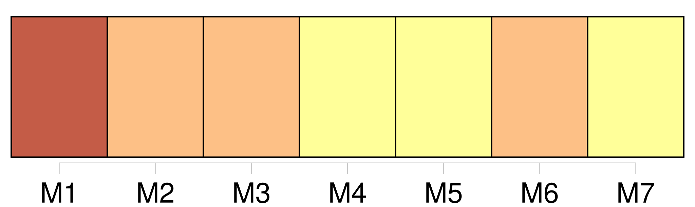
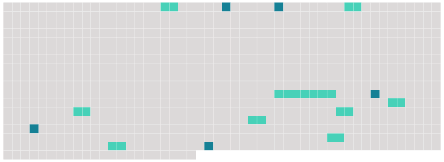

Longueur nb maillons : 14 mentions |
  |
Dans ce cas, avant de faire droit, ils autoriseront la femme à quitter la compagnie de [son mari] , sans être tenue de [le] recevoir, si elle ne [le] juge à propos ; et ils condamneront [le mari] à lui payer une pension alimentaire proportionnée à ses facultés, si la femme n'a pas elle -même des revenus suffisans pour fournir à ses besoins. [19 phrases]
L'administration provisoire des enfans restera [au mari demandeur ou défendeur en divorce] , à moins qu' [il] n'en soit autrement ordonné par le tribunal, sur la demande soit de la mère, soit de la famille, ou du commissaire du Gouvernement, pour le plus grand avantage des enfans. [1 phrases] Le femme demanderesse ou défenderesse en divorce, pourra quitter le domicile [du mari] pendant la poursuite, et demander une pension alimentaire proportionnée aux facultés [du mari]
Le tribunal indiquera la maison dans laquelle la femme sera tenue de résider, et fixera, s'il y a lieu, la provision alimentaire que [le mari] sera obligé de lui payer. [1 phrases]
La femme sera tenue de justifier de sa résidence dans la maison indiquée, toutes les fois qu'elle en sera requise : à défaut de cette justification, [le mari] pourra refuser la provision alimentaire, et, si la femme est demanderesse en divorce, la faire déclarer non recevable à continuer [ses] poursuites. [2 phrases]
Ces scellés ne seront levés qu'en, faisant, inventaire avec prisée, et à la charge par [le mari] de représenter les choses inventoriées, ou de répondre de leur valeur comme gardien judiciaire. [1 phrases]
Toute obligation contractée par [le mari] à la charge de la communauté toute aliénation par [lui] faite des immeubles qui en dépendent, postérieurement à la date de l'ordonnance dont il est fait mention en l'article 238, sera déclarée nulle s'il est prouvé d'ailleurs qu'elle ait été faite ou contractée en fraude des droits de la femme. |
 |
La ressource peut être téléchargée sur la page Ortolang
Si vous avez des questions ou vous voyez des erreurs, merci d'envoyer un mail à silvia.federzoni89@gmail.com
Site développé par S. Federzoni (contact)